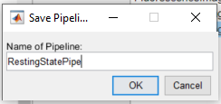

Here, we describe the steps to preprocess calcium imaging data to generate functional connectivity maps from a mouse cortex. In this example, you will learn:
The raw data used here consists of ~5 min multi-channel (fluorescence and reflectance) recordings of an awake mouse expressing GCaMP6 calcium indicator in cortical neurons. Here is the analysis workflow that we will create and apply to this data:
Functional connectivity pipeline workflow
Here, we assume that the project file was created. For more info on how to create a project file click here. To open a project file, call the umIToolbox app with the full path to your project file as input as:
umIToolbox('C:/FOLDER/projectfile.mat');
Note
Here, we show how to create an analysis pipeline using umIT's main GUI. However, the same process can be applied to a single experiment using the DataViewer app as standalone. For more info on how to use DataViewer, read the app's documentation,.
In the GUI, go to the Pipeline control panel tab:
Now, we need to select the recordings to be processed. Here, you can select multiple recordings and apply the analysis pipeline to all of them. In this example, we will process all resting state recordings from the mouse M4D. In the object tree, click on the subject node to select all recordings:

Then, click on the Select green button to confirm the selection:

Now, the Launch Pipeline Config. button is enabled and you are ready to create the pipeline.
The analysis pipeline is created using the Pipeline Configuration app. To launch the app, click on Launch Pipeline Config. A dialog box will appear so you can select which object type you want to run the pipeline. In this example, the imaging data is associated with the object FluorescenceImaging:
Note
This step exists only when the pipeline is run through the umIToolbox app. This step doesn't apply to data analysed using the DataViewer app as standalone.
In the Pipeline Configuration app, select the functions to generate the pipeline to create Seed-pixel correlation maps:
For more details on how to use the Pipeline Configuration app, click here.
The exclamation point (!) shown before the function's name, indicate that the given function has optional parameters that can be customized. In this case, we will change the frequency cut-off values for the temporal_filter function to filter our data between 0.3 and 3Hz:
Now that the analysis pipeline is built,it can be saved by clicking on the button Save to file.... In this case, since the data consists of multi-channel recordings, the app will ask for the channel name (fluo.dat) to be the input for the function GSR:

Type the name of the file to save the pipeline:
A .JSON file will be saved in the folder PipelineConfigFiles inside the project's save directory: